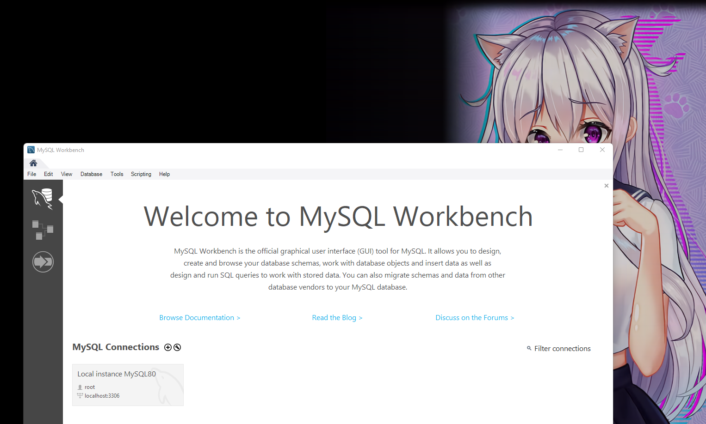

MySQL Practice 2
Contents
MySQL Practice 2¶
Setup¶
Start by installing MySQL from here: https://dev.mysql.com/downloads/
Follow the instructions from here to setup MySQL on your local machine.
Install MySQL Workbench from here: https://dev.mysql.com/downloads/workbench/
Download dataset used in this lecture from here: https://www.kaggle.com/mirichoi0218/insurance
Open your MySQL Workbench and connect to your local MySQL server.
{kind=link}
Click on create new schema to make a new schema called hacktiv8, apply until finish.
{kind=link}
Open the hacktiv8 schema, right click and select Table Data Import Wizard.
{kind=link}
Import Wizard window will appear. Select the CSV file and click Next.
Select the Create new table. Next until data is imported.
You will now see the insurance table. If you haven’t see your table yet, click Refresh.
{kind=link}
Now we are ready to start our SQL practice.
If you want to use Python, you need to install mysql-connector first with pip install -q mysql-connector-python
!pip install -q mysql-connector-python
Below are the example commands to use MySQL with Python directly.
import mysql.connector
mydb = mysql.connector.connect(
host="localhost",
user="root",
passwd=""
)
print(mydb)
<mysql.connector.connection_cext.CMySQLConnection object at 0x0000020E4778D940>
# get cursor from connection
cur = mydb.cursor()
# Query to execute
query = """select * from hacktiv8.insurance
limit 5"""
# execute this query
cur.execute(query)
# get rows
rows = cur.fetchall()
for r in rows:
print(r)
(19, 'female', 27.9, 0, 'yes', 'southwest', 16884.924)
(18, 'male', 33.77, 1, 'no', 'southeast', 1725.5523)
(28, 'male', 33.0, 3, 'no', 'southeast', 4449.462)
(33, 'male', 22.705, 0, 'no', 'northwest', 21984.47061)
(32, 'male', 28.88, 0, 'no', 'northwest', 3866.8552)
Back to MySQL Workbench, click on SQL and then we are going to run some queries.
Insurance Analytics with SQL¶
In this practice session, we will go over 7 examples to demonstrate how SQL can be used as a data analysis tool. The complexity of the examples steadily increase so it is better if you reach the end.
Let’s first take a look at the table by displaying the first 5 rows.
select * from hacktiv8.insurance limit 5

The * indicates that we want to display all column and the limit keyword specifies the number of rows to be displayed.
The dataset contains some personal information and the amount charged for the insurance.
We can calculate the average charge amount for smokers and non-smokers.
select smoker, avg(charges)
from hacktiv8.insurance
group by smoker
It is similar to the group by function of pandas. We select the smoker and charges columns and apply the average function on the charges. The group by statement allows for separating rows based on the different categories in the smoker column. Thus, we get two averages in the result. If we want to see the overall average, we only need to select the charges column.
select avg(charges) from hacktiv8.insurance;
We may also want to see the number of smokers and non-smokers along with the average charges value.
select smoker, avg(charges), count(charges)
from hacktiv8.insurance
group by smoker;
In addition to the previous example, we select the count of the charges column.
Consider a case where we need to further separate smokers and non-smokers based on gender. To accomplish this task, we need to the sex column to the group by statement.
select smoker, sex, avg(charges), count(charges)
from hacktiv8.insurance
group by smoker, sex;
The select statement also allows for filtering. For instance, we can run the query in the previous statement for people who live in the southeast region.
select smoker, sex, avg(charges), count(charges)
from hacktiv8.insurance
where region = 'southeast'
group by smoker, sex;
We use the where statement to specify the condition for filtering. It is important to note that the where statement must be written before the group by statement in the select query.
We want to find the average bmi value for different categories based on the smoker and children columns but only display the top 3 categories in terms of the average bmi.
This examples includes sorting aggregated values which can be done with the order by statement.
select smoker, children, avg(bmi)
from hacktiv8.insurance
group by smoker, children
order by avg(bmi) desc
limit 3;
The order by statement sorts the rows based on the given column in ascending order. We can change it to descending order by using the desc keyword after the name of the column.
Let’s elaborate on the previous example. Consider a case where we need the groups with average bmi values higher than the overall average.
One way is to separately calculate the overall average and use it as a condition for filtering.
select avg(bmi) from hacktiv8.insurance;
select smoker, children, avg(bmi)
from hacktiv8.insurance
group by smoker, children
having avg(bmi) > 30.6633969;
It is important to note that when we filter based on an aggregated value, we use the having statement instead of the where statement.
The second option is to combine these two queries in a nested query.
select smoker, children, avg(bmi)
from hacktiv8.insurance
group by smoker, children
having avg(bmi) > (
select avg(bmi) from hacktiv8.insurance
);
This example is a little more complex than the previous one. Instead of only displaying the rows that have a more than average bmi value, we want to create a new column that indicates whether a row is more than average or not.
We will use a case-when statement inside our nested query.
select smoker, children, avg(bmi),
(case when avg(bmi) > (
select avg(bmi) from hacktiv8.insurance) then "more than avg"
else "less than avg" end) as compared_to_avg
from hacktiv8.insurance
group by smoker, children;
Before displaying the result, let’s try to understand what each step in the query does.
We select three columns similar to the previous example. The fourth column is created with a case-when statement. The new column takes the values “more than avg” or “less than avg” based on the comparison of the average bmi value for the row and the overall average bmi value.
The overall average bmi value is calculated by using a nested select statement inside the case-when statement.
We have covered some query examples to demonstrate the data analysis capabilities of SQL.